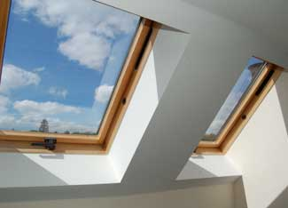
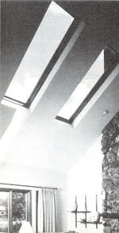
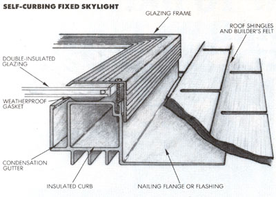

Give your home a window to the heavens.
A skylight can bring subtle, natural illumination to a light-starved room. In addition, a well-planned installation can provide warmth, ventilation, and a fresh new look to nearly any part of your house.
Small spaces are especially suited to natural overhead lighting for two very good reasons. First, properly directed daylight gives even a cramped area a welcome, open feeling. And, just as important, a skylight's out-of-the-way location allows roomplanning flexibility and privacy too.
In the past, buying a skylight was a risky proposition. Units intended for new construction were improperly used in retrofit installations. Inferior glazing plastics showed their true colors after only a few years. And, worst of all, heat loss and condensation buildup often offset any aesthetic gains.
Most of today's offerings, though, are practical and attractive, but there's enough choice to leave plenty of room for confusion. By being able to recognize the features and differences in skylight products, you'll be able to match your purchase to your needs.
One of the first considerations is the mounting system you'll be using. Essentially, your choice will depend upon the skill and experience of the installer. A contractor, or a seasoned do-it-yourself homeowner, would most likely choose a curb-mounting model to save money; this type usually has an insulated glazing frame, but the curb (a box around the skylight to raise it off the roof slightly) is not included. That part must be built into the roof during installation.
A far better choice for the nonprofessional is the self flashing (or self-curbing) model, which includes a built-in curb and flashing. Because of the extra components, this type of skylight is more expensive, but that disad vantage is offset by its ease of installation and the fact that the curbs are generally engi neered to reduce heat conduction and condensation.
There's also a third type, the flush-mount. It's simply a frameless plastic dome with an integral flange at the perimeter. This is among the least expensive types of skylights, but it's the most susceptible to thermal losses and moisture build-up unless an insulating glazing layer is included. It's also easier to install during home construction than it is to place it into an existing roof as a retrofit.
Once you've established the mounting requirements, you'll need to consider your glazing choices. Acrylic plastic is the most popular because it's tougher than glass, is insulative, and can be molded into virtually any shape. More important, it resists discoloration. Polycarbonate thermoplastic glazing has remarkable impact resistance, as well as the other desirable features of plastic. But unless it's coated with a UV-resistant material, it can lose its clarity with age. Most expensive is tempered glass, which is scratchresistant and crystal clear. But because glass is somewhat fragile, manufacturers suggest using it on steep-roof installations, where impact damage is less of a concern.
In addition to choosing the specific material, you may be faced with another decision: whether to order single-, double-, or even triple-insulated glazing. For areas that experience roughly 3,000 to 7,000 heating degree-days (most of the U.S.), double glazing would be cost-effective. In warmer climates, single glazing would be adequate, while houses in the northernmost states would probably require three layers of protection.
Too, there's the option of clear, translucent, or tinted glazing. If your goal is solar gain or a perfect view, a clear skylight is the best choice. Tints offer the same clarity, but reduce the effects of the sun's energy. A translucent white panel produces even, diffuse lighting but blocks the view. Some manufacturers allow additional flexibility by offering blinds or shades; these can be adjusted or retracted entirely to control lighting and heat loss (or gain). Even special reflective, laminated, and high-performance glazings are available.
But that's not all. Residential skylights come in flat or domed configurations. To some extent, your choice will be determined by the glazing material, since glass is flat. But consider that domed shapes are stronger by design and tend to shed light even at low sun angles. On the other hand, they're more conspicuous and distort the view to the outside.
Finally, you'll have to decide between venting skylights and fixed, nonopening types (which cost half as much and are less susceptible to leakage). In attic installations, or when additional circulation is desired, the venting types may be the best bets.
Venting skylights can be manually or electrically operated. Because they open into a living space, some manufacturers limit them to use on roofs with a pitch of 3-in-12 or greater to reduce the possibility of rain leakage. (Some provide screen inserts to keep insects out.) There's also a modified venting unit available-called a roof window-that's hinged in the center and rotates completely to facilitate cleaning from inside the house.
Installing a skylight entails more than simply buying a good product. There are structural and visual aspects to weigh before making your final choice. Probably the biggest question concerns the size of the skylight itself. Recommendations vary, but a panel sized anywhere from 4% to 10% of the room's total floor area is the norm.
Naturally, other considerations come into play: A bathroom or hallway will most likely need more light than a den. Rooms with high ceilings require additional glazing, too. And you may want to create a distinctive effect by bathing a specific area in light.
Andersen Corp.
Bayport, MN 55003
Roto Frank of America
P.O. Box 599
Research Park
Chester, CT 06412
APC Corp.
50 Utter Ave.
Hawthorne, NJ 07507
Velux-America, Inc.
450 Old Brickyard Rd.
Greenwood, SC 29648
Kenergy Corp.
3647 All American Blvd.
Orlando, FL 32810
Ventarama SkylightCorp.
140 Cantiague Rock Rd.
Hicksville, NY 11801
Naturalite, Inc.
3233 W. Kingsley Rd.
Garland, TX 75040
Wasco Products, Inc
P.O. Box 351
Sanford, ME 04073
Rolscreen Co.
102 Main St.
Pella, 1A 50219
Your imaginative creativity may be stifled, though, by such practical matters as ceiling and roof framing. Structurally, there's a limit to how big a hole you can cut in your roof, and residential skylights are generally no larger than four feet square. Even at that, you'll have to cut and "head of r' rafters (that is, build a frame to support the skylight), so you may want to install several small skylights-which can fit between the joists-or supplement natural daylighting with inconspicuously placed artificial light. In any case, it's well worth a look into your attic to establish exactly what kind of framing you have and how it's arranged.
One situation you'll want to avoid is the light-restrictive tunnel effect. Consider this: About three-quarters of all skylight installations must penetrate a ceiling as well as a roof. This means that you'll probably need a well to seal the area between the roof rafters and the ceiling joists. If that enclosure is the same size as the skylight, only a narrow shaft of light will reach the room below. Rather, aim toward angling the well outward at the bottom to let more diffuse light in and to allow an open view out.
Don't forget, either, that a skylight isn't simply a window on the roof. If you figure on orienting it south or west, toward direct sunlight, plan on some kind of shading system to shield the unit in the summer. And be sure to consult your local building code for structural and emergency egress requirements: Some skylights may not be in compliance with even modern, revised codes.
|
 ISTOCKPHOTO/KIERAN MITHANI Adding skylights will change the entire atmosphere and mood of a room. |
 APC CORP |
|
|
 |
|
|